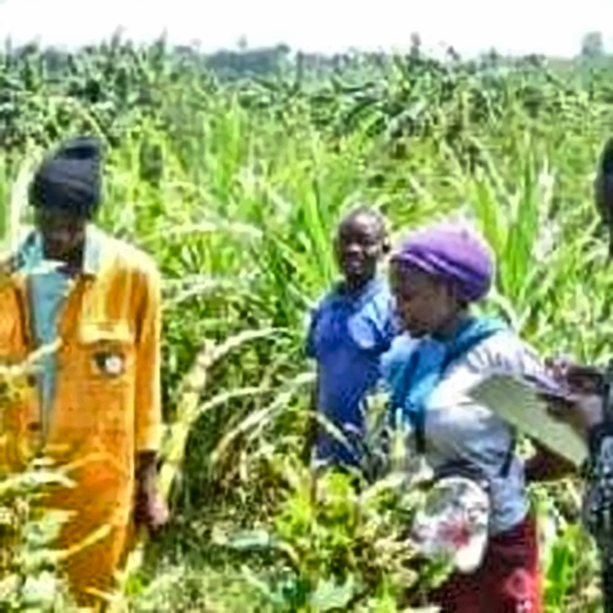
01
Agribusiness Consultancy
Strategic advice for stronger farm businesses and better decisions.
Learn more →PINNACLE AGRIBUSINESS CO. LTD
Practical, innovative and sustainable solutions that help farmers, agricultural businesses and communities grow, prosper and build a better tomorrow.
WHAT WE DO
From farm setup to market linkage, we bring practical expertise together to strengthen productivity and profitability.

Strategic advice for stronger farm businesses and better decisions.
Learn more →
Practical skills and knowledge designed for real agricultural outcomes.
Learn more →
Support for farm structures and efficient production environments.
Learn more →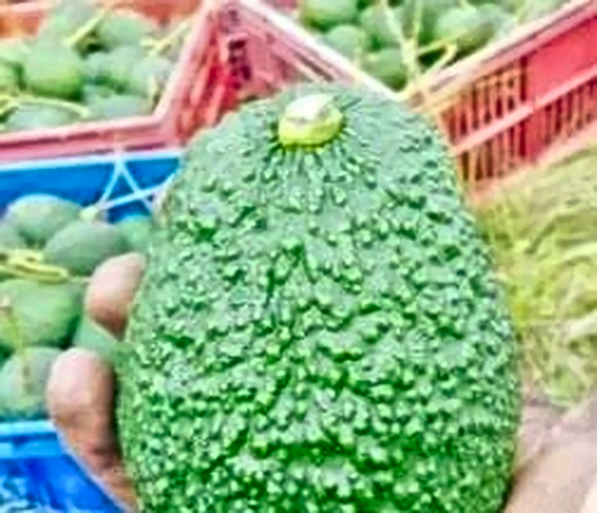
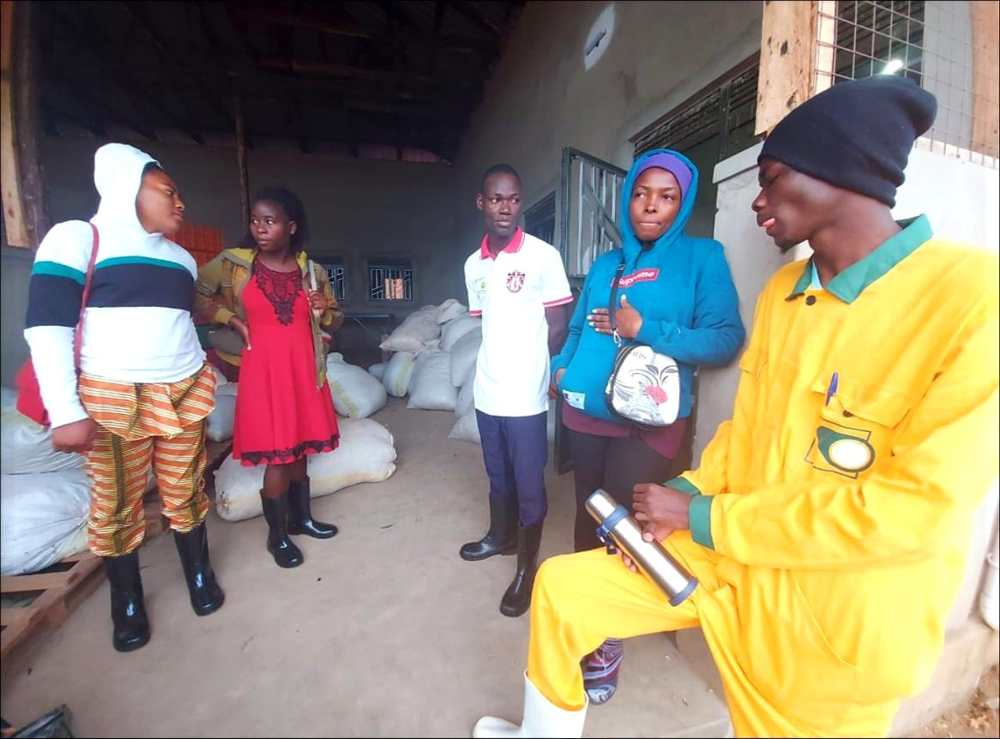

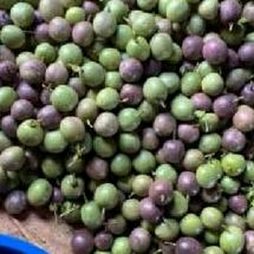
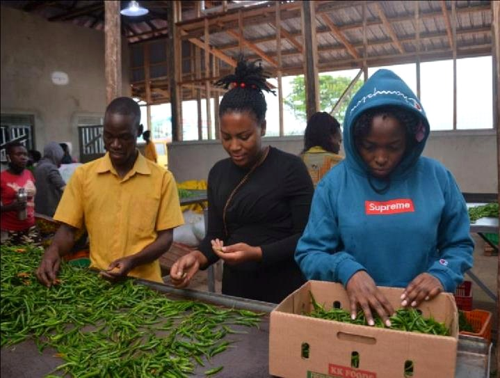
Farm machinery, maintenance and engineering solutions for production.
Learn more →ABOUT PINNACLE
Pinnacle Agribusiness Co. Ltd is an agribusiness consultancy firm dedicated to empowering farmers and agricultural businesses to achieve enhanced productivity and profitability.
View company profile ↓WHY PINNACLE
Our approach combines agricultural knowledge, innovation, sustainability, quality and strong partnerships.
We encourage efficient and technology-enabled agricultural practices.
We promote responsible practices that respect farms, people and the ecosystem.
We aim for high standards in service, safety, reliability and results.
We build long-term relationships with farmers and supply-chain partners.
OUR WORK
Explore some of the people, produce, field activities and agricultural settings represented in Pinnacle's company resources.
PINNACLE IN PRACTICE
A visual look at agricultural production, field work, nursery development and Pinnacle-branded coffee captured in the resources you provided.
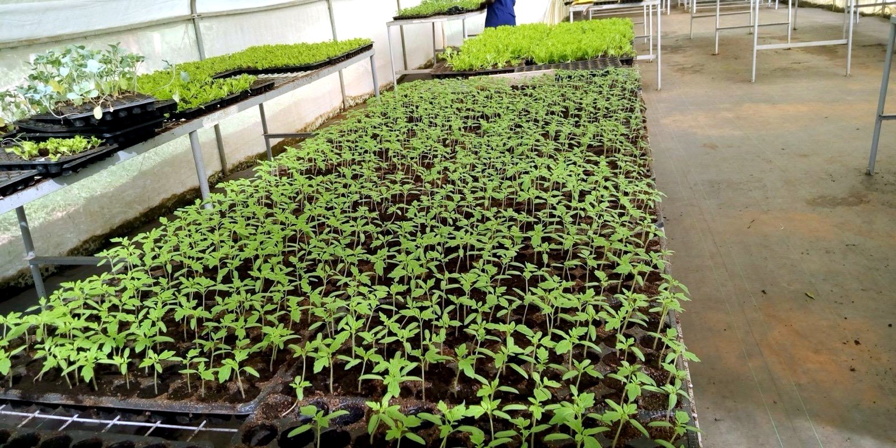
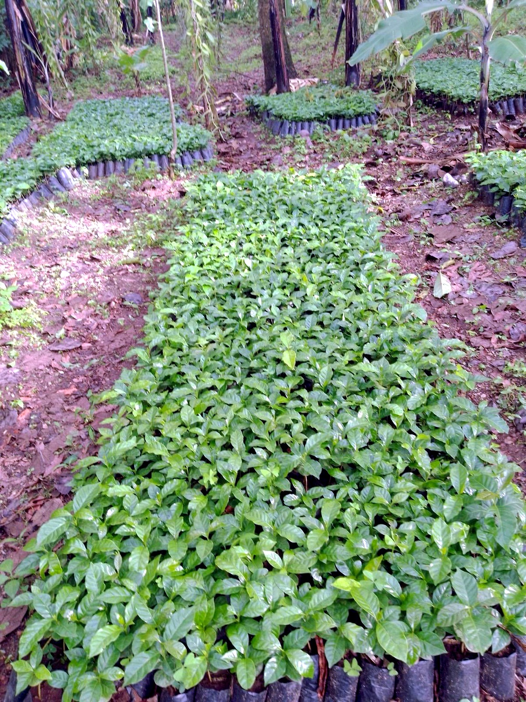
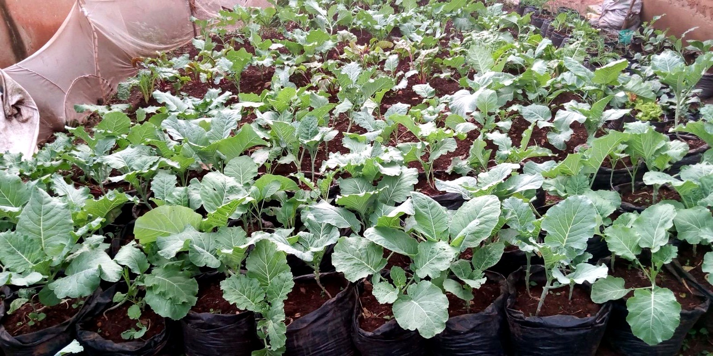
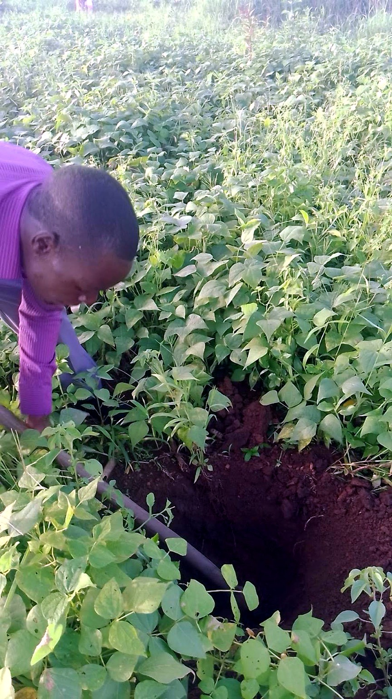
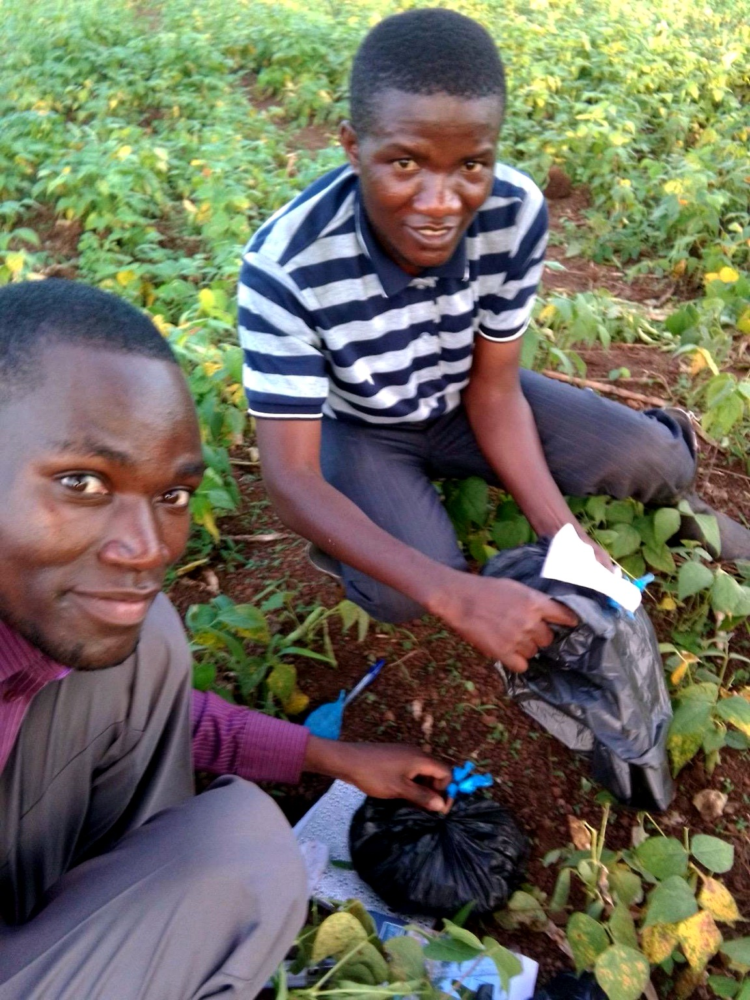
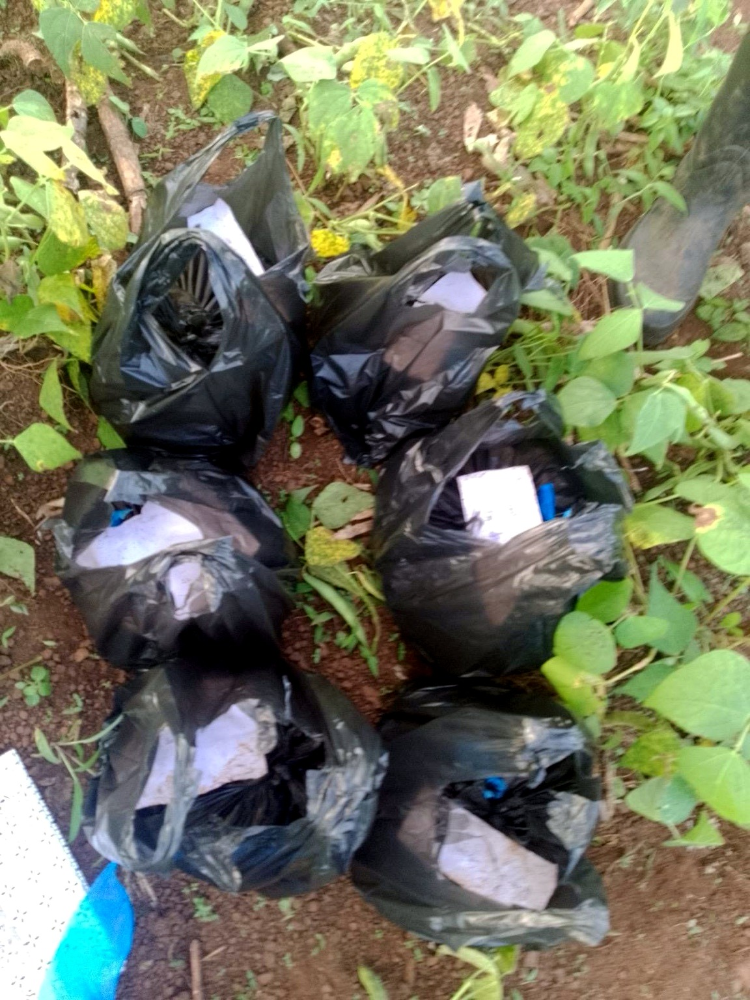
PINNACLE COFFEE
The supplied resources also showcase Pinnacle Coffee packaging, connecting the agricultural journey with a finished branded product.
Enquire about Pinnacle Coffee →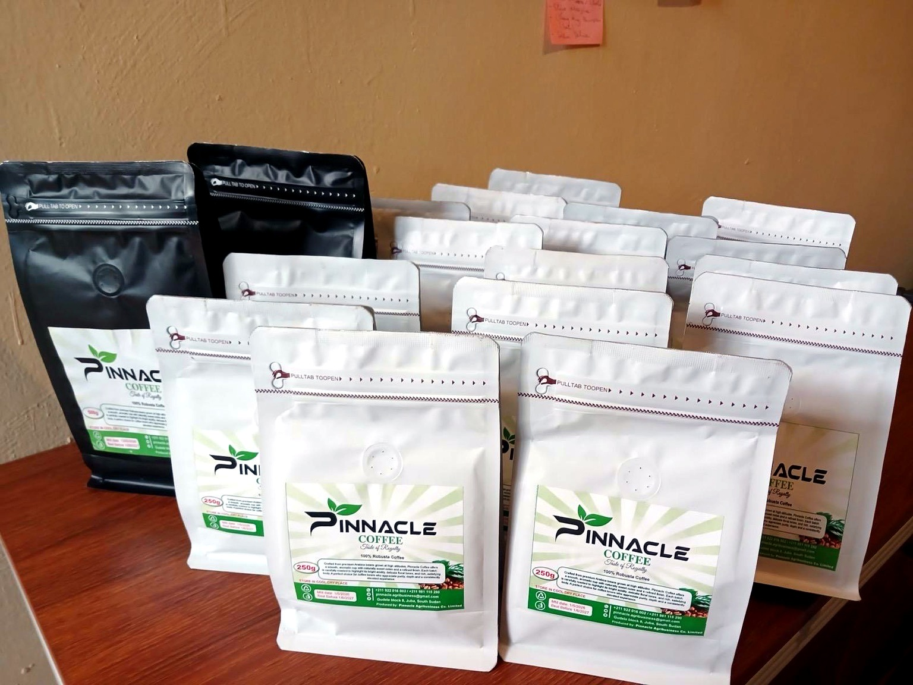
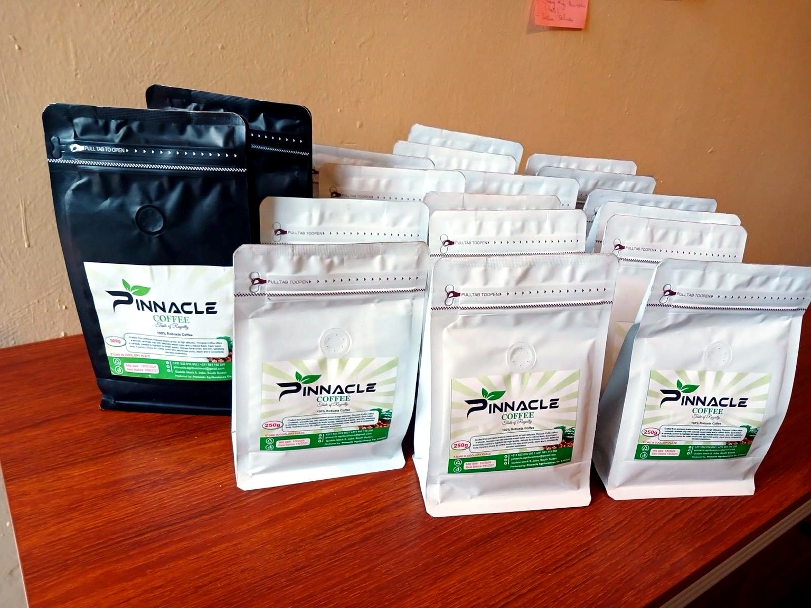
WHO WE SERVE
Pinnacle's stated customer base includes subsistence farmers, commercial farmers, NGOs and companies, with an ambition to expand across the East African Community.
OUR TEAM
Pinnacle's company profile identifies agronomists, agrovets, consultants and agricultural engineers among its service providers.
Agribusiness
Agribusiness
Agribusiness
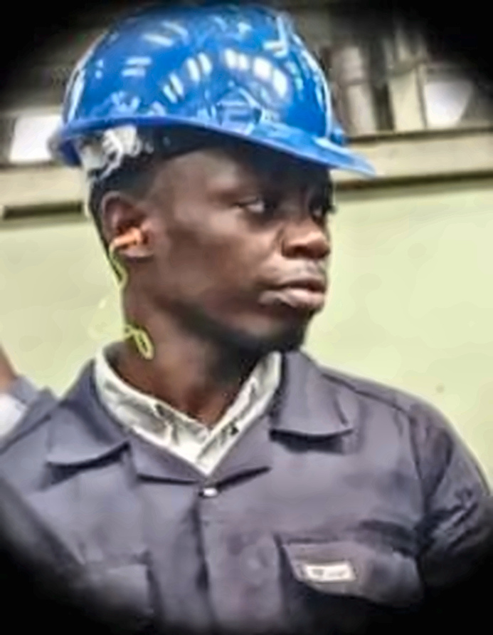
Agricultural Engineering
LET'S WORK TOGETHER
Appointments can be made physically or virtually. Pinnacle operates seven days a week, 8:00 AM–6:00 PM.